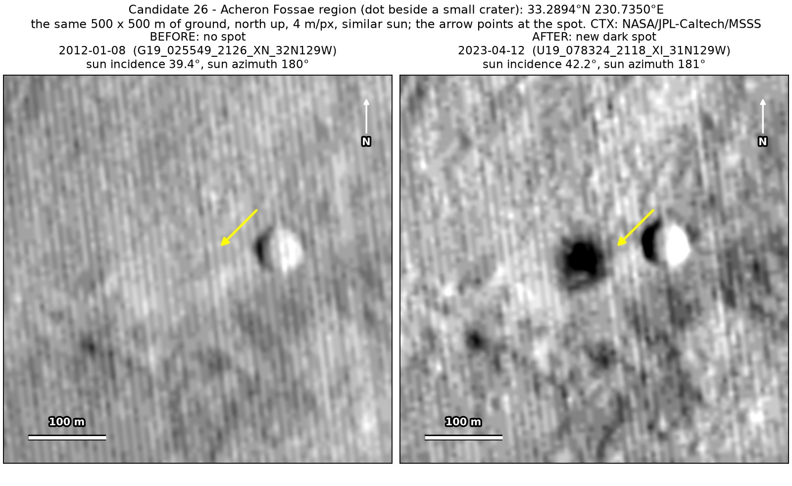
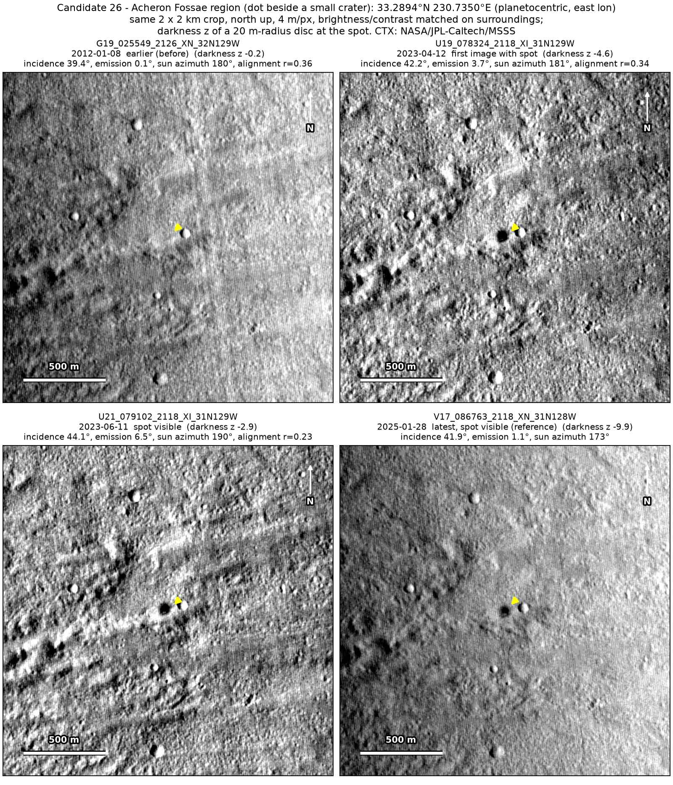
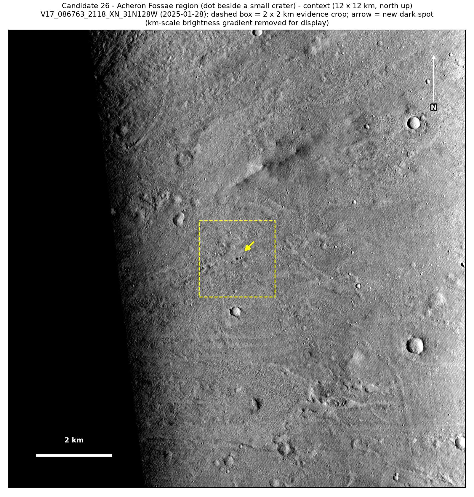
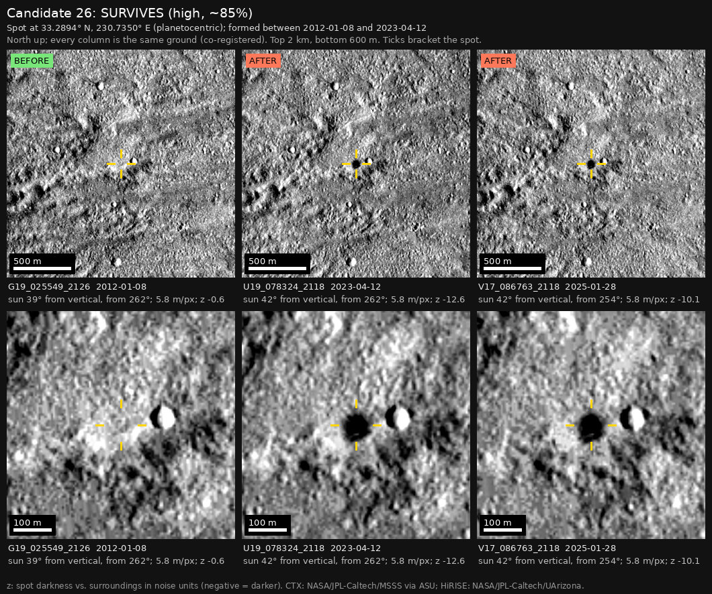

Professor of Mathematics
Paata Ivanisvili
Department of Mathematics, University of California, Irvine

← Possible new impact sites on Mars
Candidate 26: Acheron Fossae region, beside a small crater
Strong · roughly 85%

What changed. A compact dark dot about 50 m across appeared 70 m west of an old small crater in the Acheron Fossae region, between January 2012 and April 2023. It is in three images, from April 2023 to January 2025.
Why it may be a new impact. A January 2012 image, with the sun in the same direction, shows the old crater but no dot, and would have shown it clearly. The dot is a round disk beside the crater, not on its shaded side, so it is not the crater’s shadow; both key images are from northern spring, so it is not frost; and a dust-devil track would be a line.
- Location
- 33.289° N, 230.735° E (129.265° W)
- Absent
- 8 January 2012
- Present
- 12 April 2023, 11 June 2023 and 28 January 2025
- Size
- Compact dark dot about 50 m across
- Confidence
- Strong candidate; roughly 85% that it is a new impact.
- Caveat
- Only one earlier image exists, so it could have formed at any time in an eleven-year window. It lies outside every footprint of the high-resolution HiRISE camera. Like every candidate here, it is unconfirmed: see the caveat.


